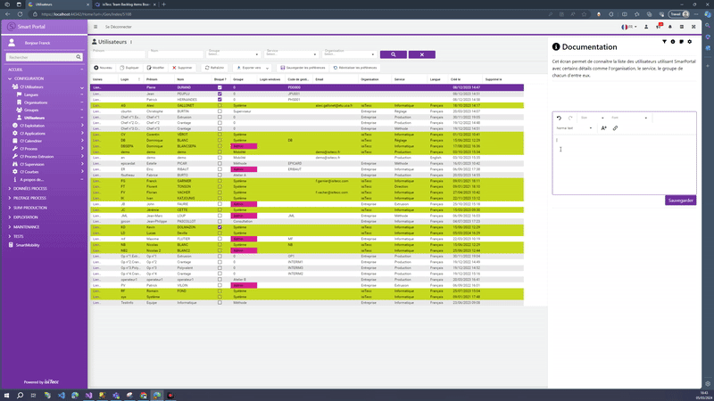

SmartPortal
isiTecc édite et intègre SmartPortal chez ses clients

Editeur HTML
Ajout d'un editeur HTML sur certaines pages du porjet SmarPortal pour laisser un commentaire.

Refonte graphique Navbar
Changement graphique de la barre de naviguation du projet SmarPortal

Drag and Drop entre deux naviguateur différent
Création d'un système de drag and drop pour faciliter l'utilisation de SmartPortal
Première application fait sur powerapps
Création d'une application de liens pour Action Logement